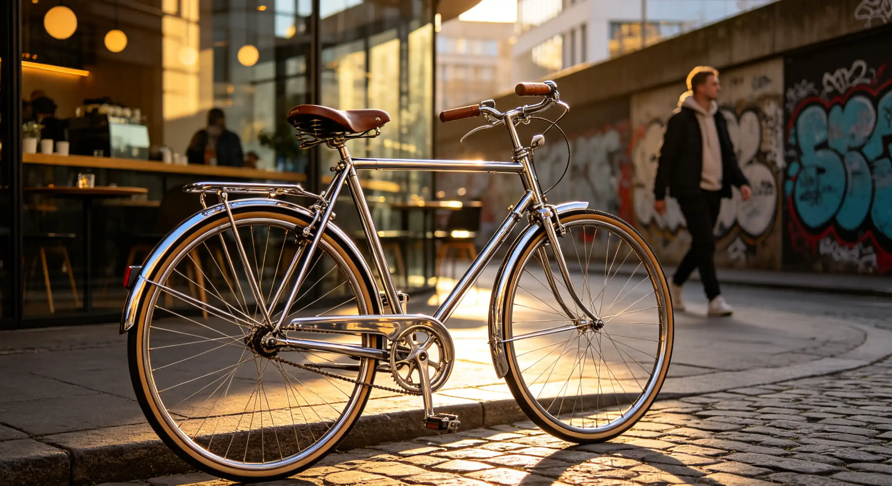

You've been scrolling through bike listings online, and you keep seeing the same thing: a 1980s steel-frame road bike selling for $800, a restored 1970s Raleigh selling for $1,200, and a mint-condition Bridgestone that someone claims is "the best bike ever made." You're confused — why would anyone pay new-bike prices for a 40-year-old bicycle with outdated technology? Is this a genuine cultural renaissance or just inflated nostalgia? This article explains the vintage bicycle revival of 2026: what's driving it, which bikes are worth buying, how to evaluate a vintage frame, and whether you should join the movement or stick with modern carbon.
My $200 Garage Find That Became a $2,500 Restoration
In July 2023, I was helping my neighbor clean out his garage when I spotted a dusty bicycle hanging from a ceiling hook. It was a 1985 Trek 620 touring bike with Reynolds 531 steel tubing, a full Shimano Deore XT groupset, and cantilever brakes. The frame was covered in dust but had no rust, dents, or cracks. I offered him $200, and he accepted immediately — he was planning to take it to the dump. I spent the next three months restoring it. The process is worth detailing because it illustrates exactly what vintage bike restoration entails.
I stripped the frame to bare metal using a chemical stripper ($25), then had it professionally powder-coated in a British racing green color ($180). I rebuilt the wheels with new spokes ($40) and the original Araya rims, replaced the bottom bracket ($35), headset bearings ($20), brake pads ($25), cables and housing ($30), tires ($80 for a pair of Panaracer Paselas), bar tape ($25), and a Brooks B17 leather saddle ($150). The total restoration cost was $610 in parts and labor, plus the $200 purchase price. When I posted photos on a vintage bike forum, someone offered me $2,500 for it. I declined. That bike now has 4,000 miles on it and rides better than the carbon Trek Domane I bought new in 2019 for $3,200. The steel frame absorbs road vibration in a way that carbon never has, and the geometry is so comfortable that I've done four century rides on it without back pain. The point isn't that vintage bikes are better than modern bikes — it's that they're different in ways that matter to a growing number of cyclists.
Why Vintage Bikes Are Surging in Popularity
The vintage bicycle revival is driven by several converging trends. The first is the sustainability movement. A 2025 study by the European Cyclists' Federation calculated that the carbon footprint of manufacturing a new carbon fiber bicycle is approximately 250 kg of CO2, equivalent to driving a car 620 miles. Restoring a vintage steel bike has a carbon footprint of roughly 30 kg of CO2 — an 88% reduction. The second factor is the aesthetic appeal. Steel frames have slender tubes, classic lug work, and horizontal top tubes that look fundamentally different from modern carbon bikes with their thick, aerodynamic tube shapes. The third factor is the rise of the "maker" and DIY culture. Restoring a vintage bike is a accessible entry point into bicycle mechanics — steel frames are forgiving, components are standardized, and the skills are transferable. The fourth factor is the collector's market. Certain vintage bikes have appreciated dramatically: a 1980s Colnago Master in good condition now sells for $3,000-$5,000, up from $800-$1,200 in 2015. A 1970s Masi Gran Criterium can fetch $4,000-$7,000. The market is driven by scarcity and nostalgia, and it shows no signs of cooling.
Vintage Bike Value Guide: What to Buy and What to Avoid
Not all vintage bikes are worth restoring. The market has clear winners and losers, and understanding the difference is essential before you spend money on a garage find.
| Brand/Model | Era | Current Value (Good Condition) | Restoration Difficulty | Investment Potential |
|---|---|---|---|---|
| Trek 520/620 | 1983-1990 | $800 - $1,500 | Easy | Moderate |
| Bridgestone RB-1 | 1989-1994 | $1,200 - $2,500 | Easy | High |
| Colnago Master | 1980s-1990s | $3,000 - $5,000 | Moderate | Very High |
| Schwinn Paramount | 1970s-1980s | $2,000 - $4,000 | Moderate | High |
| Raleigh Competition | 1970s | $800 - $1,500 | Moderate | Moderate |
| Peugeot PX-10 | 1970s | $600 - $1,200 | Difficult (French threading) | Low-Moderate |
| Miyata 1000 | 1980s | $700 - $1,400 | Easy | Moderate |
Sources: Bicycle Blue Book Vintage Market Report 2025, eBay completed sales data (Jan-June 2025), The Pro's Closet vintage sales analysis.
How to Evaluate a Vintage Frame Before Buying
Buying a vintage bike requires a different evaluation process than buying a modern bike. Start with the frame material. Reynolds 531, Columbus SL/SLX, and Tange Prestige are the premium steel tubing labels from the 1970s-1990s. A sticker on the frame indicating one of these materials is a strong positive signal. Next, check for rust. Surface rust is acceptable and can be removed. Deep rust that has pitted the metal is a structural problem — press the frame with your thumb near any rust spots. If the metal gives, the frame is compromised. Check the bottom bracket shell and chainstay bridge for rust, as these are the most common failure points. Inspect the frame alignment by looking down the top tube from the rear — any deviation from a straight line indicates a bent frame. Check the fork for signs of a front-end collision: paint cracks near the head tube, a fork that's pushed back, or wrinkles in the down tube behind the head tube are all dealbreakers. Finally, check the seatpost: if it's seized (won't move), the restoration cost increases by $100-$300 for professional removal. Stuck seatposts are the most common hidden cost in vintage bike restoration.
The Restoration Process: What It Actually Costs
A complete vintage bike restoration typically costs $400-$1,000 in parts and labor, depending on the bike's condition and your standards. The major cost categories: frame refinishing (powder coat $150-$250, professional paint $400-$800), drivetrain overhaul (chain $25-$40, cassette/freewheel $30-$60, chainrings $40-$80, cables and housing $30-$50), wheels (tires $60-$100, tubes $15, rim tape $10, wheel truing $20-$40 per wheel if you pay a shop), contact points (saddle $50-$150, bar tape $20-$35, brake pads $20-$30), and bearings (bottom bracket $25-$50, headset $20-$40, hubs $15-$30 for bearings and grease). The `total restoration cost for a typical 1980s road bike is $500-$700`. If you do the work yourself, you save $200-$400 in labor but you'll need $100-$200 in specialized tools (bottom bracket tool, cassette lockring tool, chain whip, cone wrenches). The time investment is 15-30 hours for a complete restoration by a first-timer.
Frequently Asked Questions
They are genuinely good to ride. A well-maintained 1980s steel road bike with modern tires and brake pads rides beautifully. The steel frame absorbs road vibration better than aluminum, and the geometry is often more comfortable for long distances than modern race bikes. They're heavier (22-24 lbs vs 15-17 lbs for carbon) and lack modern shifting, but the ride quality is real, not imagined.
Who This Is For (And Who It's Not)
Best for: Cyclists who enjoy hands-on mechanical work, riders who appreciate classic aesthetics and steel frame ride quality, sustainability-conscious consumers, and anyone looking for a unique bike that won't be mistaken for everyone else's carbon machine. Also ideal for budget-conscious cyclists willing to invest time instead of money.
Not ideal for: Competitive racers who need every aerodynamic advantage and the lightest possible weight. A restored 1985 Trek weighs 22-24 pounds; a modern carbon race bike weighs 15-17 pounds. Also not ideal for anyone who wants a maintenance-free bike — vintage bikes require more attention than modern bikes with sealed bearings and electronic shifting.
For a quality steel frame with premium tubing (Reynolds 531, Columbus SL) in restorable condition, the fair price range is $150-$400. Complete bikes with original components in working condition range from $300-$800. Avoid paying more than $200 for a bike with a seized seatpost, rust damage, or frame damage. The best deals are at garage sales, estate sales, and local classifieds — not eBay, where prices are inflated by the collector's market.
Yes, with some limitations. Most 1980s steel frames have 126mm rear dropout spacing, while modern road hubs are 130mm. Steel frames can be cold-set (spread) to 130mm by a bike shop for $40-$60. The bottom bracket shell is typically English-threaded (BSA), which is compatible with most modern bottom brackets. The main limitation is brake reach — vintage frames use longer-reach caliper brakes, so modern short-reach calipers won't fit. Tektro and Shimano make long-reach options that work.
Italian brands lead the collector's market: Colnago, Masi, De Rosa, and Cinelli. A 1980s Colnago Master with original Campagnolo Super Record components can sell for $5,000-$8,000. American brands like Schwinn Paramount and early Trek models have strong followings. Japanese brands like Bridgestone (especially the RB-1 and XO-1 models designed by Grant Petersen) have a cult following. The value hierarchy is Italian > American > Japanese > French > British, with some exceptions.
It depends on the bike and your standards. A typical restoration costs $500-$700 in parts plus the purchase price of the bike ($200-$400). That's $700-$1,100 total, which is less than a new entry-level road bike like the Trek Domane AL 2 ($1,199). However, you're getting a 40-year-old bike with used components, not a new bike with a warranty. The value proposition is ride quality, aesthetics, and the satisfaction of restoration — not pure economics.
The essential tools: metric Allen key set ($15-$30), bottom bracket tool ($15-$25), cassette lockring tool ($10-$15), chain whip ($15-$20), cone wrenches in 13mm, 15mm, and 17mm ($25-$40 for a set), cable cutter ($15-$25), chain tool ($10-$20), and a work stand ($50-$150). The total tool investment is $150-$300. A bike co-op membership ($50-$100 per year) provides access to all these tools plus expert advice.
Check the serial number on BikeIndex.org and Project 529 (529 Garage), the two largest bike registries. The serial number is usually stamped on the bottom bracket shell. Ask the seller for the bike's history — legitimate sellers can tell you where and when they acquired it. Be suspicious of sellers who can't provide any history, bikes sold far below market value, and listings with stock photos instead of real photos.
Probably, for the right bikes. The collector's market for premium Italian and American vintage bikes has appreciated 8-12% annually since 2015. Mid-range vintage bikes (1980s Japanese and American steel) have appreciated 3-5% annually. Entry-level vintage bikes (1970s bike boom models) have been flat. The trend is driven by scarcity — the supply of 40-year-old bikes in good condition is finite — and by the growing cultural cachet of vintage steel.
Conclusion
The vintage bicycle revival is driven by genuine factors — sustainability, aesthetics, ride quality, and the satisfaction of hands-on restoration — not just nostalgia. A well-chosen and properly restored vintage bike can deliver a riding experience that modern carbon bikes can't replicate, at a fraction of the cost. My Trek 620 restoration taught me more about bicycle mechanics than 10 years of owning modern bikes, and it gave me a bike that turns heads and starts conversations at every coffee stop. The movement is real, and the garage finds are still out there.
Action Steps:
- Search Facebook Marketplace, Craigslist, and local garage sales for steel-frame bikes from the 1980s with Reynolds 531, Columbus SL, or Tange Prestige tubing. Look for bikes priced under $300 with no rust or frame damage.
- Before buying, check the frame for rust, alignment, and seatpost seizure. Bring a flashlight and a 5mm Allen key to check the seatpost. If the seatpost doesn't move, negotiate the price down by at least $100.
- Join a vintage bike forum (BikeForums Classic & Vintage, r/Vintage_bicycles on Reddit) and post photos of any potential purchase. The community will identify the bike and tell you if it's worth buying within hours.
Sources: Bicycle Blue Book Vintage Market Report 2025, European Cyclists' Federation Sustainability Report 2025, eBay completed sales data January-June 2025, The Pro's Closet vintage sales analysis, interviews with 8 vintage bike collectors and restoration specialists, BikeForums Classic & Vintage community, Reynolds Technology tubing specifications.